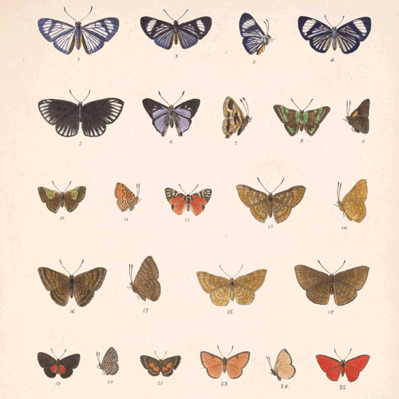
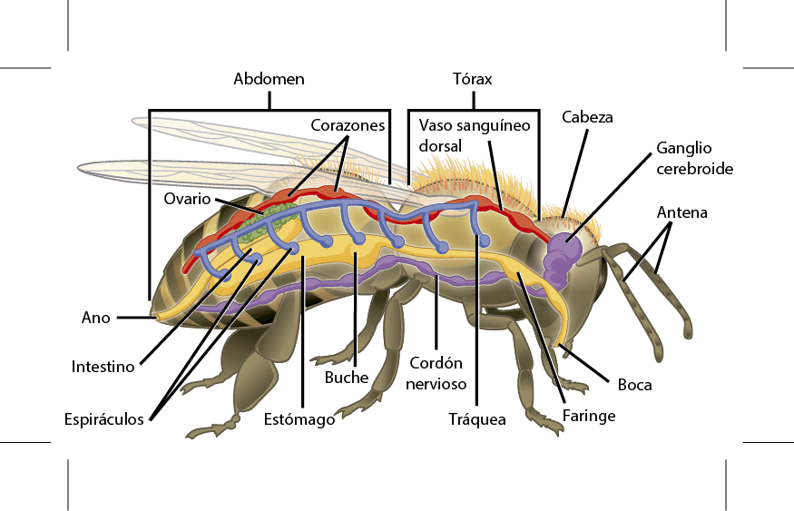
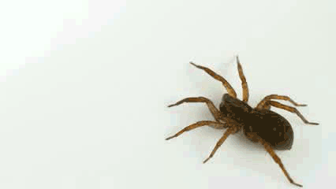
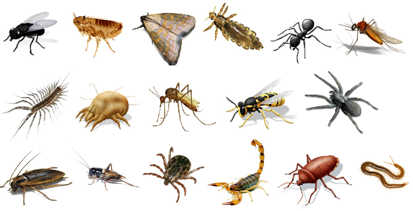

Artrópodos
Los Artrópodos, Arthropoda, son un filo de animales invertebrados que se caracterizan por presentar un exoesqueleto, por tener el cuerpo segmentado y especialmente por tener apéndices articulados, lo que les da su nombre derivado del griego. Es el filo dentro del reino Animal que tiene más número de especies descritas y también el que cuenta con un mayor número de individuos en el planeta Tierra. Son muchos los animales pertenecientes a este grupo que están presentes en la vida humana, entre ellos las moscas, las arañas, las mariposas o las gambas.
Características de los artrópodos
-
El número de especies incluidas en el filo de los Artrópodos supera el millón y algunas estimaciones hablan de que puede haber hasta 10 millones de especies. Al ser un grupo tan diverso, es complicado aunar unas características que sean comunes a todos ellos. Por ejemplo, en tamaño existe gran variabilidad y podemos encontrar especies microscópicas así como algunas que miden varios metros. Pueden vivir en aguas marinas, aguas dulces, en el aire o en la tierra. Además, son uno de los dos grandes grupos de animales que están adaptados para vivir en ambientes secos.
- Una de sus características principales es la segmentación de su cuerpo que está formado por la repetición de metámeros formando módulos repetidos. Sin embargo, juntamente con esta segmentación hay un fenómeno conocido como tagmatización en la que el cuerpo de cada artrópodo se puede dividir en dos o tres partes claramente diferenciadas. Aunque la segmentación no es apreciable a simple vista en todas las especies, sí lo es en todas sus formas embrionarias.

- Otro aspecto clave de los artrópodos es su exoesqueleto, fabricado por cutícula, un material no celular secretado por la epidermis. Cada uno de los segmentos del cuerpo de los artrópodos está envuelto en esta cutícula y las uniones entre varios segmentos se cubren por cutícula flexible. En muchas especies la cutícula está cubierta de quetas, o pequeños pelos, que desarrollan funciones diversas. La cutícula presenta tres partes: epicutícula es la más externa, bastante delgada y ayuda a permeabilizar; exocutícula, la más gruesa y rígida y por último la endocutícula que es bastante gruesa pero a la vez flexible. El exoesqueleto no crece a medida que se desarrolla un artrópodo por lo que limitaría su crecimiento. Es por eso que estos animales deben mudar de exoesqueleto a lo largo de sus vidas en un proceso conocido como ecdisis. Son momentos que requieren mucha energía por parte del animal y donde resulta especialmente vulnerable.
- Los órganos internos de los artrópodos también están segmentados, teniendo los sistemas nervioso, circulatorio y excretor componentes repetidos a lo largo de su organismo. El sistema circulatorio es abierto por lo que su sangre, conocida como hemolinfa, circula libremente por toda la cavidad corporal. La mayoría usan un pigmento para transportar el oxígeno, la hemocianina, que comparten con muchos otros invertebrados.

- Su respiración puede usar diferentes sistemas, aunque el más típico es el de las tráqueas, un conjunto de tubos enramados que conectan el exterior con todas las partes internas de su cuerpo. Algunos tienen unos pulmones primitivos y los que viven en el mar normalmente suelen presentar branquias.
- Su sistema nervioso es relativamente complejo y normalmente presentan un par de nervios que recorren todo el cuerpo y que en cada segmento forman un par de ganglios. Hay una cefalización bastante clara y el cerebro está formado por la fusión de varios ganglios y situado en la cabeza. Los artrópodos tienen varios sentidos bastante desarrollados, siendo la vista el que más llama la atención. Muchas especies tienen ojos compuestos formados por múltiples repeticiones de unos elementos conocidos como omatidios situados en varias direcciones y proporcionando una visión muy amplia. Otros tienen ojos simples, mucho más sencillos y que normalmente permiten una visión mucho más limitada. Otros sensores que poseen los arácnidos son las sensilias, encargados de los estímulos químicos, y los receptores táctiles.
Reproducción
-
La mayoría de artrópodos se reproducen sexualmente y la fecundación puede ser externa cuando están en el agua o interna cuando son de medio aéreo o terrestre. La mayoría de animales de este grupo son ovíparos, aunque algunas especies como los escorpiones son vivíparos. Algunos tienen un desarroll directo mientras que otros necesitan pasar por varias etapas de larva.

Clasificación de los artrópodos y ejemplos
Se conocen cinco subfilos dentro de los artrópodos, aunque uno de ellos sólo contiene especies ya extinguidas. Son los siguientes:
Los trilobites eran animales marinos que desaparecieron en los eventos de extinción del periodo triásico.
-
Quelicerados (Chelicerata)
Los quelicerados se caracterizan por tener un par de apéndices justo al lado de la boca que les ayudan en la alimentación. En este grupo se incluyen los arácnidos (arañas y escorpiones), así como los xifosuros.
Los miríapodos son un grupo de atrópodos exclusivamente terrestres caracterizados por un elevado número de patas. En ellos se incluyen los ciempiés y los milpiés.
Los crustáceos mayoritariamente acuáticos, se caracterizan por tener extremidades birrámeas, es decir que se ramifica en dos extremos. Gran parte del marisco como las gambas, cangrejos o langostas está incluido en este grupo.
Los hexápodos se caracterizan por tener seis patas e incluye a los insectos (moscas, abejas, escarabajos) y otras órdenes parecidas.
